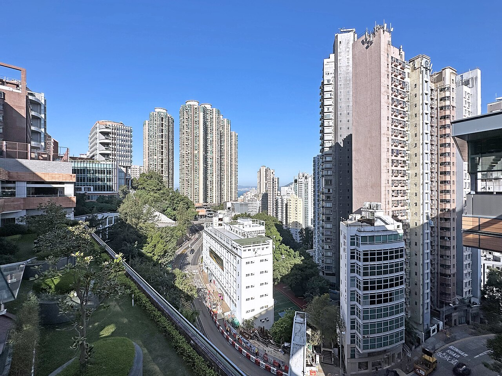
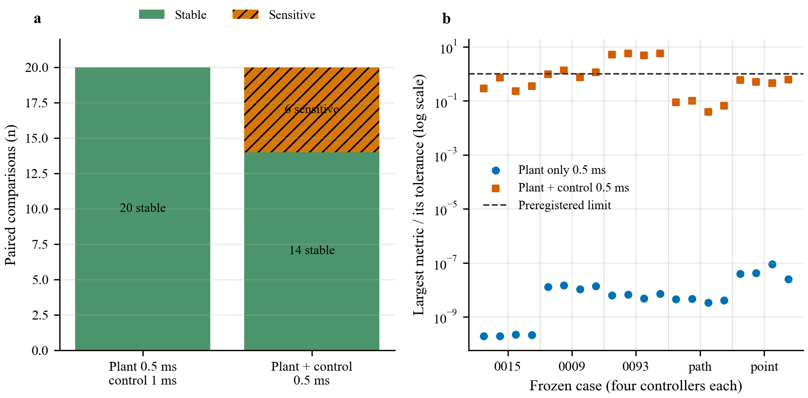
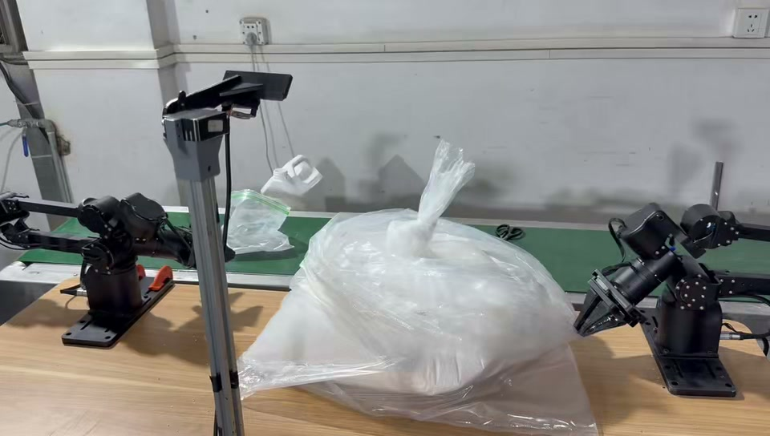
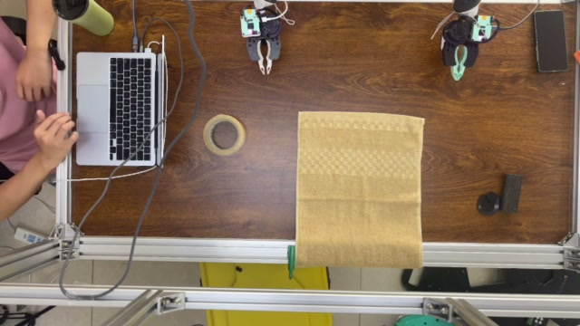
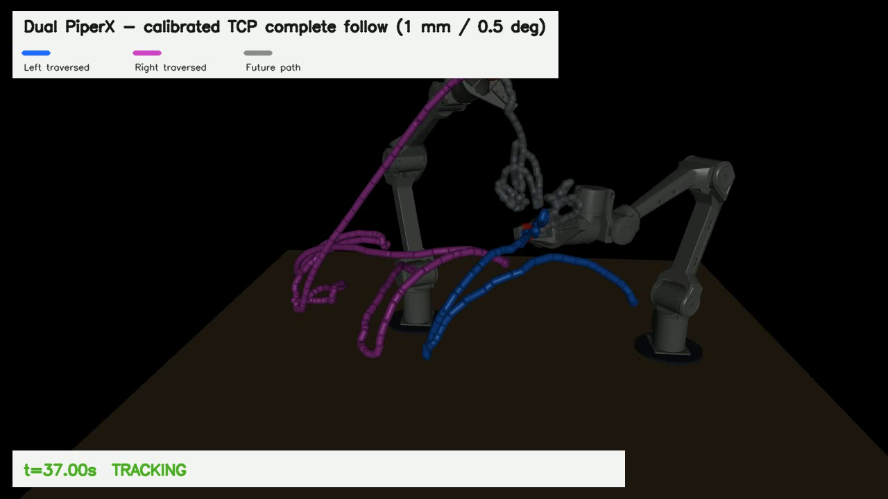
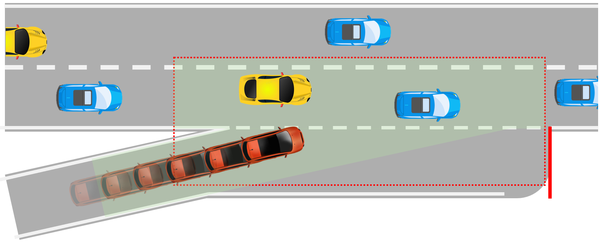
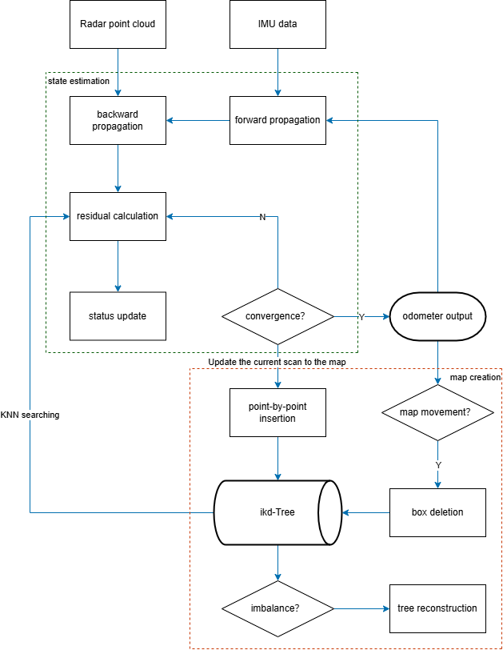
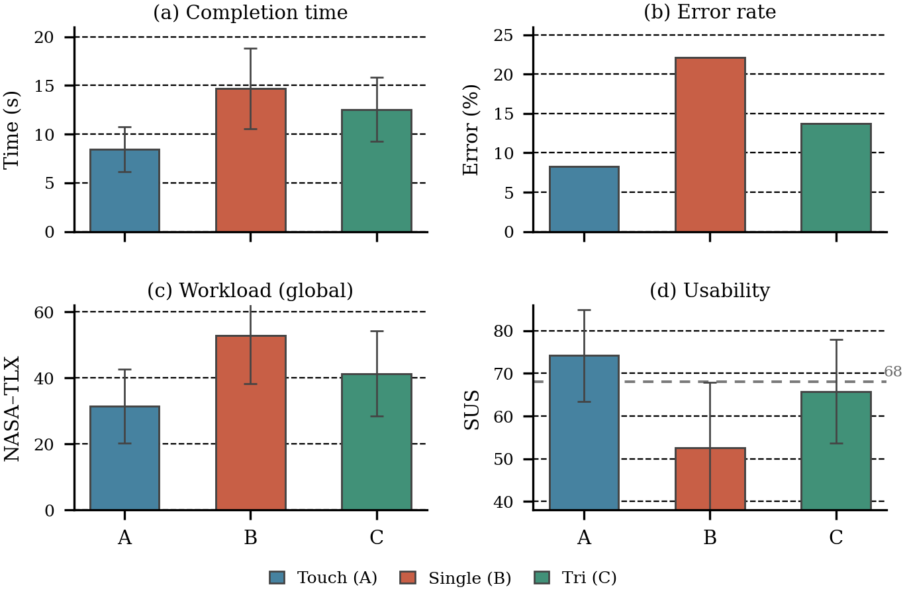

Robot Design and Evaluation
Comparing robot designs and mount layouts against task requirements, then checking motion feasibility, collisions, and execution in simulation.
Robot control, motion planning & real-world data.
I study Computer Engineering at the University of Hong Kong. My research asks when a robot can reliably carry out a planned motion.
I’m Zhenghao YU, a Computer Engineering undergraduate at The University of Hong Kong. My work spans robot design and control, autonomous driving, embedded systems, and human-computer interaction. Across these areas, I focus on how systems behave beyond ideal test conditions.
At Ragtime Lab, I curated multimodal factory data and evaluated robot designs, mounting, and trajectories. Separately, I study reliable manipulation through nonlinear simulation, controller tuning, and numerical sensitivity tests. Earlier projects took me from adversarial highway-merging tests to wheel-leg navigation and contactless vehicle interfaces.
I build systems that others can inspect, repeat, and improve—from the data behind a task to the limits of the final result.

02 / Research
From factory demonstrations to robot control. Select a topic to find the experiments behind it.
Research map
Hover, tap, or tab to a topic to see how it connects to my work.
Comparing robot designs and mount layouts against task requirements, then checking motion feasibility, collisions, and execution in simulation.
Finding failure cases in highway-merging planners through adversarial scenarios, multi-agent learning, and SOTIF-aligned testing.
Connecting sensor fusion, global and local planning, and balance control on wheel-leg robotic platforms.
Designing and evaluating gaze, head, and voice interaction for vehicle cabins where noise and vibration limit conventional interfaces.
An independent manipulation-control study and two robotics projects from Ragtime Lab.

Independent research · 2026–present
A nonlinear 2-DOF MATLAB/Simulink platform for testing torque-aware PID and Fuzzy-PID control, trajectory execution, and robustness. The latest study asks whether fixed-controller results survive finer simulation and feedback time steps.
On 112 held-out requested simulation tasks, reliable success rose from 17.9% (20/112) with the original Fuzzy-PID to 50.9% (57/112) with the research controller. In a separate three-case numerical study, mean paired joint RMS tracking error fell 90.7% versus the initial manually tuned PID.
The 112-task success comparison comes from an earlier held-out validation. The later numerical study used five prespecified cases and four fixed controllers. All 40 comparisons were complete; six changed beyond a preregistered tolerance when both plant and controller ran at 0.5 ms. Controllers were not retuned, and no confirmation set was opened. Results are simulation-only.


Data infrastructure
A documented collection of real factory and lab manipulation tasks. Original files, synchronized observations, and task notes remain available for analysis and benchmarking.
The collection covers 33 tasks in 23 archives, including 13 UMI collections with 58 episodes and 42,223 frames. It keeps the original source files and provenance alongside task notes and LeRobot v3 data.

Motion & evaluation
A pipeline for testing how recorded dual-hand tasks map to PiperX installations, using strict inverse kinematics, collision checks, and the original controller-event timing.
This full 17.64-second Fold Box simulation follows 97.88% of paired raw-tool targets within 1 mm and 0.5° after a mount adjustment, up from 94.83%. Failed frames show a safe hold; the simulated state, swept-edge, and topology checks report zero violations.
The broader evaluation covered 27 trajectories from 12 task families and 4 mount layouts. This video shows one complete optimized recording, with no retiming or object model. Nine target frames are geometrically incompatible with the 15 mm clearance rule even at the stated tolerances, setting a 98.81% upper bound for this raw recording. It is a MuJoCo kinematic playback of the saved joint states, not forward-dynamics or hardware execution. The published joint path exceeds the PiperX speed and acceleration limits and is not a hardware-ready command.
Autonomous driving, robot navigation, and in-vehicle interaction.

Accepted / In Press / IEEE OJITS / 2026
Combines diffusion-based trajectory refinement, game-theoretic strategy selection, and adaptive gating for CAV ramp merging in HighwayEnv. Against the reported baselines, collision rate fell from 12.3% to 3.7%.

Published / ICEEGT 2025 / pp. 704-720
Presents a wheel-leg drug-delivery robot tested in hospital environments, combining multi-sensor localization, global and local planning, and PID self-balancing.

Published / JIKE / Vol. 4, No. 2 / April 2026
Evaluates a gaze, head-confirmation, and voice interface for noisy, vibrating cabins. In a 30-participant Wizard-of-Oz study, it reduced errors and workload compared with a pooled single-modality contactless baseline.
Built a 33-task multimodal manipulation dataset and evaluation workflows for robot design, mounting, and trajectories across 13 robot arms. Added provenance hashes, automated checks, aggregate reports, and synchronized MuJoCo videos so results can be traced back to their sources.
See internship projects →Built a nonlinear 2-DOF MATLAB/Simulink control framework with retimed trajectories, inverse-dynamics feedforward, and torque-aware PID/Fuzzy-PID. The latest numerical study completed 60 simulation runs and found feedback-period sensitivity in 6 of 20 whole-loop refinement pairs.
See research project →Developed a MARL and diffusion-based framework for testing highway-merging planners. In HighwayEnv, it generated 2,000+ valid safety-critical scenarios, achieved 92% effectiveness in triggering unexpected planning behavior, and improved failure detection by 85% over random testing.
Designed a gaze, head-confirmation, and voice-refinement interface for noisy, vibrating vehicle cabins. Built a three-layer fusion architecture and evaluated the prototype with 30+ participants in a Wizard-of-Oz study.
Developed a wheel-leg drug-delivery robot with multi-sensor localization, adaptive path planning, and PID balance control. Hospital experiments measured no more than 5 cm localization error, no more than 10 cm path-tracking error, 0.3 s response to dynamic obstacles, and 98.2% obstacle-avoidance success.
Designed a dual-layer CAN architecture and 24-series lithium battery BMS for humanoid robots. Built a four-layer sensor-acquisition PCB and contributed to HR160 electrical architecture reviews.
BEng in Computer Engineering, Sep 2023 - Jun 2027
GPA 3.40 / 4.3, Top 15% among 2,558 students.
Academic Exchange Program, Jun 2024 - Aug 2024
Simulation Methods for Optimization and Learning (A).
I’m interested in MS and PhD research opportunities in robotics and AI. If our work overlaps, I’d be glad to connect.
Zhenghao@connect.hku.hkBased in Hong Kong
Computer Engineering · HKU